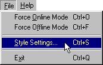
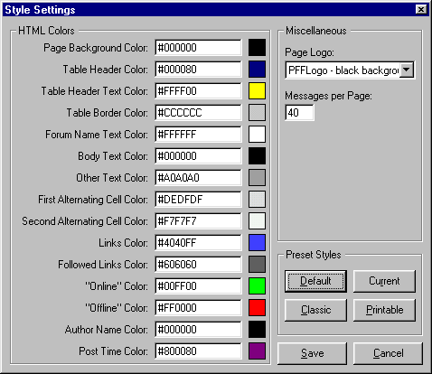
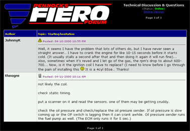
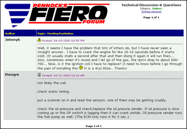
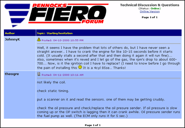
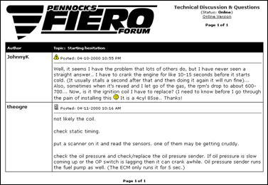

3.3 Style Settings
Whenever you view threads from within PFFCD, it creates the HTML page (a page your browser
knows how to view) for this thread on-the-fly. The advantage of this is not only that
it takes less space on the CD to store all threads, but also that you are able to change
the appearance of the created HTML pages. To change the appearance of viewed threads, choose
"Style Settings..." from the "File" menu:

The following window will appear on your screen:

All colors are listed in HTML style. A HTML style color is made up of a hash (#),
followed by three hexadecimal pairs, one pair for each base color: Red, Green and Blue. To make choosing
colors easier, you can also click on the small colored box after each color. A color
window will appear so you can easily pick your colors. Note that browsers cannot display
the full palette of 16.7 million colors so when you choose a color, it might look different in
your browser.
There are four preset color-schemes: "Default", "Classic", "Current"
and "Printable". Clicking on any of these buttons will set all colors automatically
to preset colors:

"Default"

"Classic"

"Current"

"Printable"